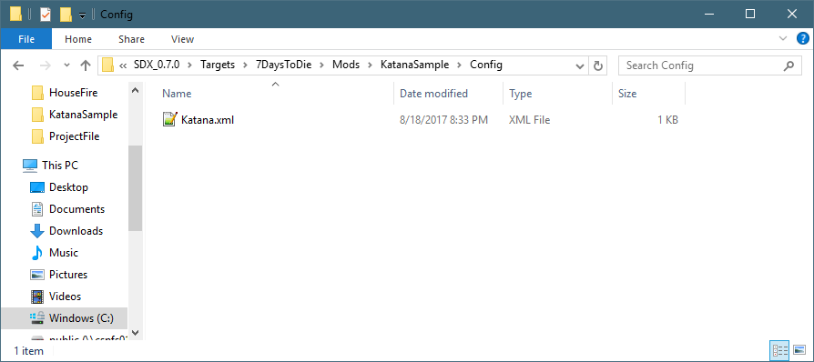

What fun is the Katana if you can't make it in game? Let's go through the steps on adding a recipe list for it.
In the SDX Launcher, click on the Mods Folder.

Then navigate into the double click on the Katana Sample folder, then the Config folder:

Using Notepad++, edit the file
Add a new "<config> node under the katanamichonne item by copy and pasting the Recipes Snippet, highlighted in Blue for clarity
Recipes Snippet |
<!-- Adding a new recipe for the mod --> <config name="recipes"> <append xpath="/recipes" > <recipe name="katanamichonne" count="1" craft_area="workbench"> <ingredient name="forgedSteel" count="20"/> <ingredient name="wood" count="4"/> <ingredient name="leather" count="4"/> </recipe> </append> </config> |
The new file will look like this:
File: KatanaSample\Config\Katana.xml |
<configs> <!-- This tells SDX to add to the Items.xml --> <config name="items"> <!-- This tells SDX to add the following Items to the bottom of the Items list --> <append xpath="/items"> <!-- New item will be Katana --> <item id="" name="katanamichonne"> <!-- Extend it from the machete, but add the custom mesh --> <property name="Extends" value="machete"/> <property name="Meshfile" value="#michonnekatana?katana" /> </item> </append> </config> <!-- Adding a new recipe for the mod --> <config name="recipes"> <append xpath="/recipes" > <recipe name="katanamichonne" count="1" craft_area="workbench"> <ingredient name="forgedSteel" count="20"/> <ingredient name="wood" count="4"/> <ingredient name="leather" count="4"/> </recipe> </append> </config> </configs> |
Save your changes, and go back to the SDX Launcher, and do another Build.
Load up your save game, and search for the Katana sword in your Crafting menu

Created with the Personal Edition of HelpNDoc: Full-featured Kindle eBooks generator